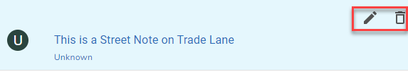

There are several places where actions are displayed for street notes.
1.If you select the Notes tab for a street you have the option to add a note for the street e.g.

Action |
Description |
Add a note to the street |
2.If you hover over a note on the Notes tab for the street e.g.

Action |
Description |
Edit the note |
|
Delete the note |
3.If you select the Note from the Notes tab you can delete a note for a street e.g.

Action |
Description |
Delete the note |